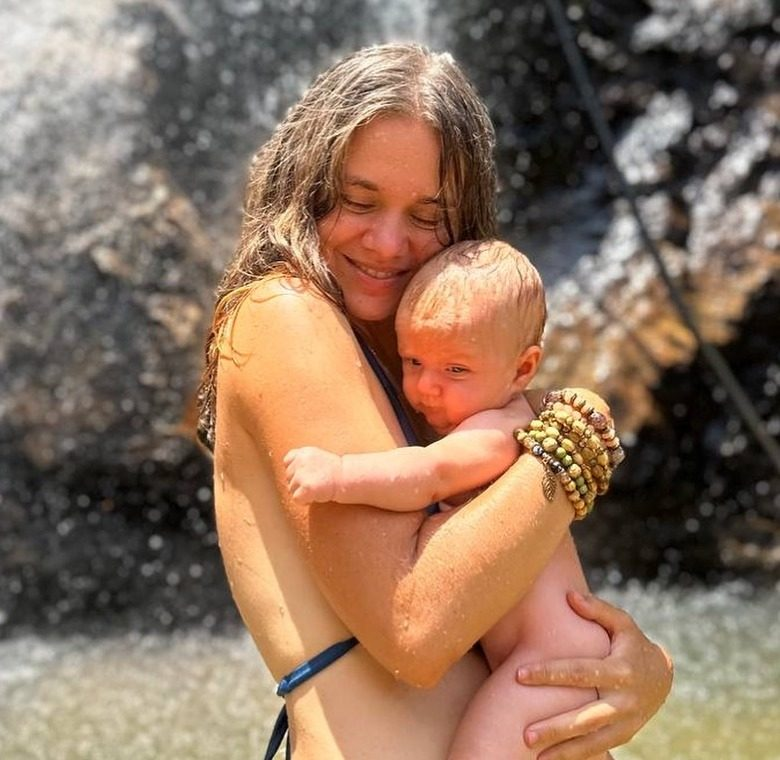
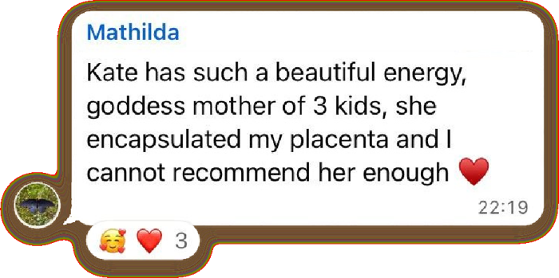

Капсуляція плаценти
Природна підтримка відновлення після пологів, зроблена з вашої плаценти й тільки для вас.
Ще вагаєтеся? Напишіть мені, із радістю відповім на запитання.
Природна підтримка відновлення після пологів, зроблена з вашої плаценти й тільки для вас.
Ще вагаєтеся? Напишіть мені, із радістю відповім на запитання.


Плаценту дбайливо висушують, подрібнюють на порошок і поміщають у капсули. Виходить натуральна добавка з вашого власного тіла. З однієї плаценти зазвичай виходить близько 150 капсул. Багато мам приймають їх у перші 40 днів, щоб підтримати відновлення, енергію, вироблення молока й настрій.
Флакон 100 мл із вашої плаценти, термін зберігання необмежений.
Для вас: традиційно використовують пізніше, щоб відновити сили, підтримати гормональний баланс, зняти стрес, під час хвороби, під час менструального циклу, у менопаузу й інші перехідні періоди.
Для мами й доньки: ваша біологічна мама може використовувати її в менопаузу, а біологічна донька — коли в неї почнуться місячні.


Унікальна пам’ять про пологи: відбиток плаценти, «дерево життя», на полотні. Робиться перед капсуляцією. Його можна повісити вдома, а полотно зняти з рами й скрутити: воно легко поміститься у валізу.
Ви бронюєте місце, і ми разом усе плануємо.
Я забираю плаценту, зазвичай у перший день.
Дбайливо висушую й капсулюю.
Ваші капсули готові.
Я готую плаценту в безпечній і теплій атмосфері, з глибокою повагою до дива, яке ви пережили.
Медичний халат, стерильні рукавички й маска, повністю стерилізована кухня та інструменти, які використовуються лише для роботи з плацентою. Я працюю з однією плацентою за раз: ваша залишається вашою від початку до кінця.
Без проблем! Після пологів тримайте плаценту в холодильнику. Партнер чи помічник пакує її в термос із льодом і надсилає мені поромом. Термос я даю на час, а капсули надсилаю назад.

Передоплата 2 000 бат бронює місце (не повертається), решта — коли отримаєте капсули.
Я беру лише 3 мам на місяць, тож бронюйте заздалегідь, краще до 36 тижнів.
Я Катя, мама трьох дітей, 5 років живу на Ко Пангані. Супроводжую жінок у пологах і відновленні після них, роблю післяпологовий масаж і викладаю кундаліні-йогу. Капсуляції плаценти навчилася у Вікторії Відри, досвідченої доули й фахівчині з плаценти. Тепер допомагаю мамам отримати м’яку підтримку власної плаценти в перші тижні після пологів.

Краще до 36 тижнів. Напишіть мені, і ми разом усе сплануємо.
Засоби з плаценти — традиційна практика, а не лікування. Вони не замінюють консультації лікаря.